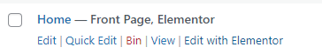
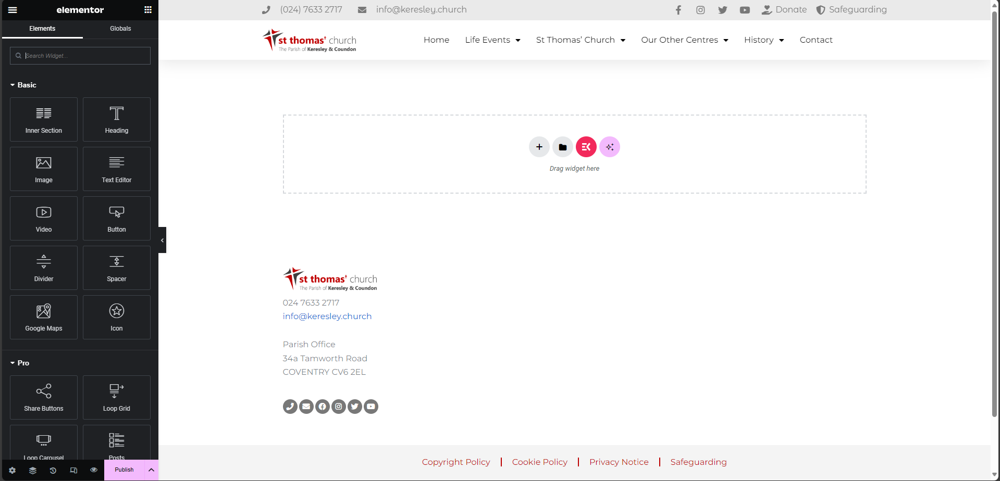
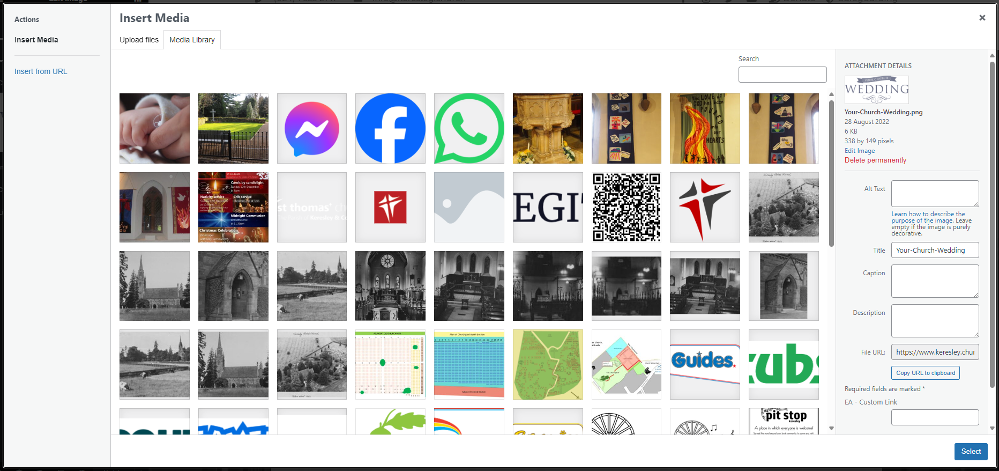

Updating Web Pages
Updating a page
Go to the WordPress Pages Page and under the page you want to edit click "Edit with Elementor" 
This will show you the main Elementor page editor. 
Select the items you want on the page and drag them from the sidebar to the page. If you just want to update the content on the page, click on the part you want to update and the sidebar will update allowing you to change content. Changing an Image on a Webpage
Once you have updated the content for your page, click on Update.

Page updates take 1-2 hours to show
Changing an Image on a Webpage
Follow the guide to update a page Updating Web Pages
Click on the image on you webpage. The sidebar will update.

Hover over the image on the sidebar and click Choose Image. This will display the media browser. Either upload a new image or select an image from one that has already been uploaded. 
Once you have selected a new image for your page, click on Update.
Page updates take 1-2 hours to show